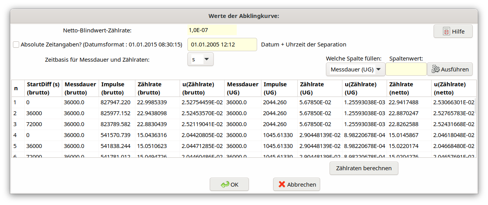
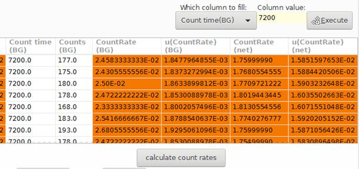

5.10. Dialog „Eingabe der Abklingkurve“¶
Der Aufbau des Dialogs ist im folgenden Bild gezeigt.

In diesem Dialog ist zunächst Datum und Uhrzeit der Y-90/Sr-90-Separation einzugeben. Das Datumsfeld wird wie folgt benutzt: „07.09.2006 09:04:00”. Das Jahr kann zwar auch 2-stellig eingeben werden, es wird aber die Benutzung der 4-stelligen Jahreszahl empfohlen. Das Programm ersetzt intern im Datumsfeld alle Interpunktionszeichen durch ein Leerzeichen und liest dann die 6 Datumselemente formatfrei ein.
Für die Basiseinheit für Zeitangaben von Messdauern und Zählraten kann zwischen s und min gewählt werden. Intern erfolgt bei der Wahl von min eine Umrechnung auf die Basiseinheit s!
Der in diesem Dialog nur angezeigte (nicht editierbare) Wert der Netto-Blindwert-Zählrate ist der Wert des Symbols Rbl, der vom Benutzer in der Symbolliste im TAB „Werte, Unsicherheiten” eingeben wurde. Der für die Messung von Rbl gültige Wert der Nulleffektzählrate darf darin nicht enthalten sein.
Für die Eingabe der einzelnen Messwerte der Abklingkurve steht eine Tabelle mit 11 Spalten zur Verfügung, deren 11 Spalten folgende Bedeutung haben; dabei sind nur die in schwarzer Farbe gezeigten Spalten vom Benutzer auszufüllen, während die rot eingefärbten Spalten vom Programm berechnet werden (siehe unten).
Column
|
Name
|
Meaning
|
|---|---|---|
1
|
Start date
|
Date/time of the start of the k-th measurement
(input format as shown above), or,
time duration between Y-90/Sr-90 separation and
the start of the k-th measurement (as a number
with decimal point); the program realizes
automatically which of the two possibilities is
used.
|
2 |
Count time |
Counting time of the k-th measurement |
3 |
Counts |
Gross counts of the k-th measurement |
4 |
CountRate |
Calculated gross counting rate |
5 |
u(CountRate) |
Unsicherheit der Bruttozählrate |
6 |
Count time |
Messdauer der k-ten Nulleffektmessung |
7 |
Counts |
Impulse der k-ten Nulleffektmessung |
8 |
CountRate |
Berechnete Nulleffektzählrate |
9 |
u(CountRate) |
Unsicherheit der Nulleffektzählrate |
10 |
NetCountRate |
Berechnete Nettozählrate |
11 |
u(NetCountRate) |
Uncertainty of the net counting rate |
Mit Hilfe des Buttons „Zählraten berechnen” werden in den Spalten 4/5, 8/9 und 10/11 (im rot gekennzeichneten Bereich) die Werte der Brutto-Zählrate, Nulleffekt-Zählrate und Nettozählrate berechnet und eingetragen. Dabei wird der Wert der Netto-Blindwert-Zählrate :math:`R_{bl}` berücksichtigt (siehe oben).
Vereinfachung der Eingabe in die Spalten 2, 6 und 7:
Hierfür steht jetzt eine Option innerhalb dieses Dialogs zur Verfügung, mit dem innerhalb einer dieser Spalten ein fester Wert in alle betreffenden Zellen dieser Spalte übertragen werden kann.

Tipp
Import aus ASCII-Datei: Liegen die in die ersten drei Spalten einzugebenden Werte als ASCII-Datei vor, ebenfalls spaltenweise separiert, so kann jede dieser Spalten (nacheinander) markiert und in die Windows-Zwischenablage kopiert und in die entsprechende Spalte des UncertRadio-Dialogs eingefügt werden (rechte Maustaste: „einfügen”). Der Mauszeiger muss dabei nur vorher in die oberste Zelle dieser Spalte gesetzt werden.
Tipp
Import aus Excel-Datei: Liegen die einzugebenden Werte bereits in einer Excel-Datei vor, so können sie per Maus („kopieren und einfügen”) über die Windows-Zwischenablage in den entsprechenden Zellenbereich des UncertRadio-Dialogs übernommen werden. Dabei können alle drei Spalten gleichzeitig in einem Schritt kopiert werden.